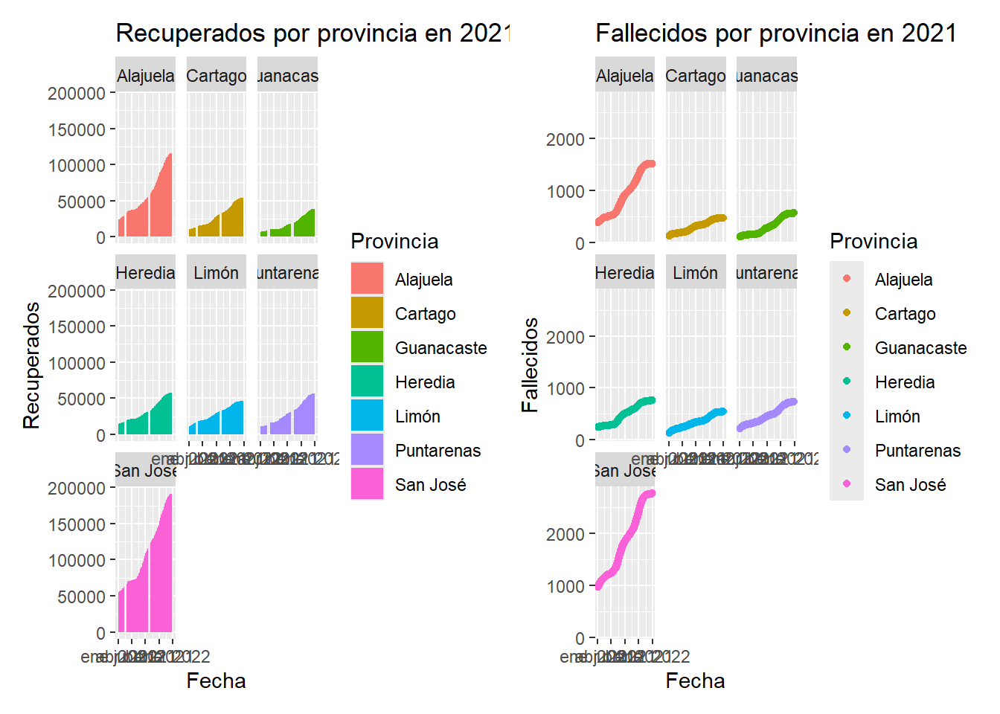

My Website
Estudiante: Harlen Daniel Quirós Gómez
Carnet: 2022082503
Estudiante: Manuel de Jesús Calero Ríos
Carnet: 2022082503
## # A tibble: 5,390 × 4
## # Groups: provincia [7]
## provincia fecha casos anio
## <chr> <date> <dbl> <dbl>
## 1 Alajuela 2020-04-23 118 2020
## 2 Alajuela 2020-04-24 110 2020
## 3 Alajuela 2020-04-25 107 2020
## 4 Alajuela 2020-04-26 100 2020
## 5 Alajuela 2020-04-27 96 2020
## 6 Alajuela 2020-04-28 87 2020
## 7 Alajuela 2020-04-29 84 2020
## 8 Alajuela 2020-04-30 84 2020
## 9 Alajuela 2020-05-01 82 2020
## 10 Alajuela 2020-05-02 81 2020
## # ℹ 5,380 more rows Hacer reseña que por dicha no hubo muchos días con muchos casos nuevos
de covid, la mayoría de días hubo menos de 500 casos.
Hacer reseña que por dicha no hubo muchos días con muchos casos nuevos
de covid, la mayoría de días hubo menos de 500 casos.
## Warning: Removed 5 rows containing non-finite outside the scale range
## (`stat_bin()`).
## Warning: Removed 5 rows containing non-finite outside the scale range
## (`stat_bin()`). Hacer reseña entre las diferencias y que nunca hubo tantos hombres
positivos como mujeres en un solo dia.
Hacer reseña entre las diferencias y que nunca hubo tantos hombres
positivos como mujeres en un solo dia.
## # A tibble: 2,433 × 3
## FECHA edad value
## <dttm> <chr> <dbl>
## 1 2020-03-11 00:00:00 Menores fallecidos 0
## 2 2020-03-11 00:00:00 Adultos fallecidos 9
## 3 2020-03-11 00:00:00 Adultos mayores fallecidos 0
## 4 2020-03-12 00:00:00 Menores fallecidos 0
## 5 2020-03-12 00:00:00 Adultos fallecidos 1
## 6 2020-03-12 00:00:00 Adultos mayores fallecidos 0
## 7 2020-03-13 00:00:00 Menores fallecidos 0
## 8 2020-03-13 00:00:00 Adultos fallecidos 2
## 9 2020-03-13 00:00:00 Adultos mayores fallecidos 1
## 10 2020-03-14 00:00:00 Menores fallecidos 0
## # ℹ 2,423 more rows Hacer reseña hubieron muchos días con pocos casos en niños y adultos
mayores, pero con los adultos tuvieron días con muchos más casos, estos
fueron pocos días, por eso la gráfica se ve tan punteada.
Hacer reseña hubieron muchos días con pocos casos en niños y adultos
mayores, pero con los adultos tuvieron días con muchos más casos, estos
fueron pocos días, por eso la gráfica se ve tan punteada.
## # A tibble: 1,628 × 3
## FECHA fallecidos value
## <dttm> <chr> <dbl>
## 1 2020-03-07 00:00:00 hombres fallecidos 0
## 2 2020-03-07 00:00:00 mujeres fallecidas 0
## 3 2020-03-08 00:00:00 hombres fallecidos 0
## 4 2020-03-08 00:00:00 mujeres fallecidas 0
## 5 2020-03-09 00:00:00 hombres fallecidos 0
## 6 2020-03-09 00:00:00 mujeres fallecidas 0
## 7 2020-03-10 00:00:00 hombres fallecidos 0
## 8 2020-03-10 00:00:00 mujeres fallecidas 0
## 9 2020-03-11 00:00:00 hombres fallecidos 0
## 10 2020-03-11 00:00:00 mujeres fallecidas 0
## # ℹ 1,618 more rows En ambos gráficos se puede ver que hay días donde levemente hubo más
hombres fallecidos que mujeres. Hubieron días que no hubo muertes. La
caja de los hombres se observa un poco más larga, lo que quiere decir
que la dispersión de cantidad de fallecidos por día es mayor en los
hombres.
En ambos gráficos se puede ver que hay días donde levemente hubo más
hombres fallecidos que mujeres. Hubieron días que no hubo muertes. La
caja de los hombres se observa un poco más larga, lo que quiere decir
que la dispersión de cantidad de fallecidos por día es mayor en los
hombres.
 Hacer reseña de que san josé tiene muchos picos en más años comparados
con las otras provincias, de igual manera en Alajuela
Hacer reseña de que san josé tiene muchos picos en más años comparados
con las otras provincias, de igual manera en Alajuela
Gráfica multidimensional
## # A tibble: 6 × 332
## cod_provin provincia cod_canton canton `44384` `44385` `44386` `44387` `44388`
## <dbl> <chr> <dbl> <chr> <dbl> <dbl> <dbl> <dbl> <dbl>
## 1 1 San José 112 Acosta 4 5 5 3 4
## 2 1 San José 110 Alaju… 28 35 32 18 13
## 3 1 San José 106 Aserrí 30 32 27 19 7
## 4 1 San José 118 Curri… 15 24 19 26 4
## 5 1 San José 103 Desam… 88 106 84 88 49
## 6 1 San José 117 Dota 0 0 0 0 0
## # ℹ 323 more variables: `44389` <dbl>, `44390` <dbl>, `44391` <dbl>,
## # `44392` <dbl>, `44393` <dbl>, `44394` <dbl>, `44395` <dbl>, `44396` <dbl>,
## # `44397` <dbl>, `44398` <dbl>, `44399` <dbl>, `44400` <dbl>, `44401` <dbl>,
## # `44402` <dbl>, `44403` <dbl>, `44404` <dbl>, `44405` <dbl>, `44406` <dbl>,
## # `44407` <dbl>, `44408` <dbl>, `44409` <dbl>, `44410` <dbl>, `44411` <dbl>,
## # `44412` <dbl>, `44413` <dbl>, `44414` <dbl>, `44415` <dbl>, `44416` <dbl>,
## # `44417` <dbl>, `44418` <dbl>, `44419` <dbl>, `44420` <dbl>, …